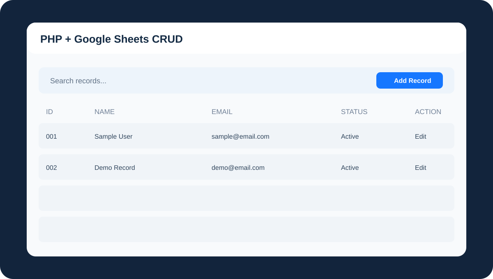

Learning Project
PHP + Google Sheets CRUD Web App
A focused learning exercise for Create, Read, Update, and Delete operations in a PHP application connected to Google Sheets and run locally through XAMPP.

A focused learning exercise for Create, Read, Update, and Delete operations in a PHP application connected to Google Sheets and run locally through XAMPP.
This smaller project is intentionally presented as a learning project rather than inflated into a production system. It complements the deeper BankFlow and Frozen Meatshop POS case studies.